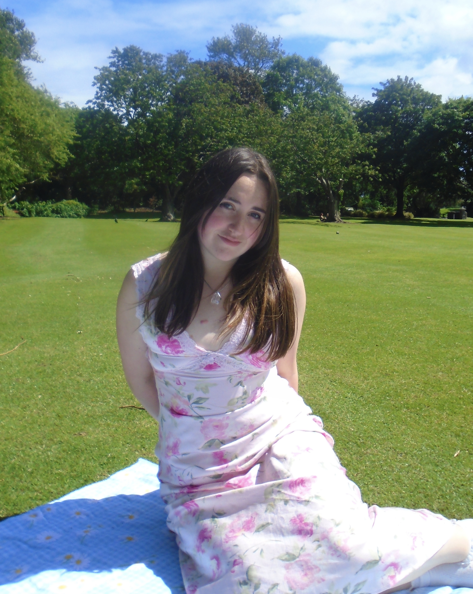
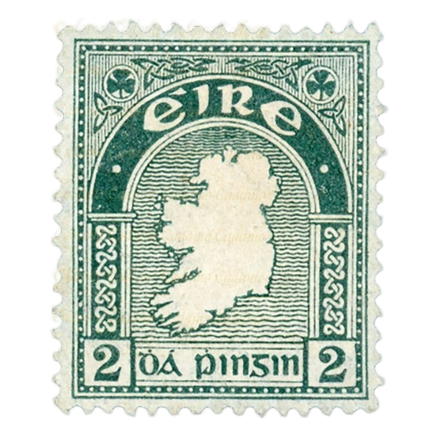
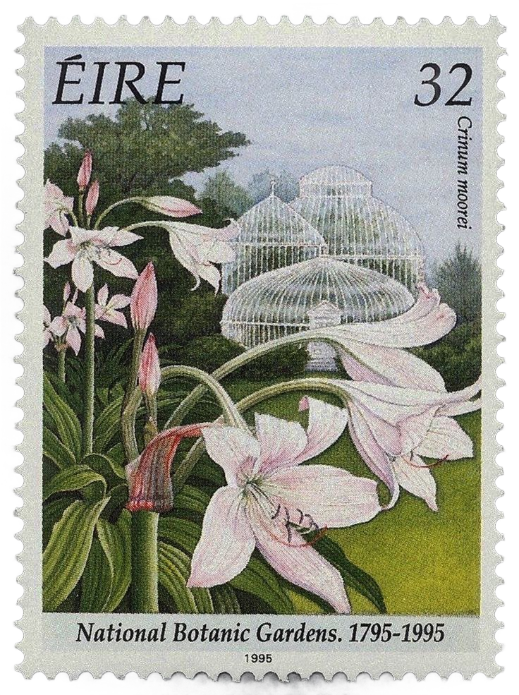

it's nice to meet you!
I'm Meghan
I'm a student at Trinity studying Interactive Digital Media & Computer Science. Across every chapter, one thing stayed the same: I was always building or creating something.
Creative tech came naturally to me: I've always been the person noticing what's broken and wondering how to fix it. During my journey, that curiosity grew into something bigger: a real appreciation for how much a well-designed experience can matter to people.
2004
Meghan

When I'm not building websites, ill be thrifting for vintage clothes, cycling, weightlifting or trying new food.


×